The Entrance Piazza with its glorious made-in-Chicago “Modern Gothic” terra cotta ornamentation, and its new Schwebel Company landscape complete with Longshadow Planters to dress the entry.
Follow Pope Leo’s footsteps and step inside the walled gardens at St. Thomas the Apostle Church on where as a boy he would have attended mass from time to time with his grandparents who were parishioners and lived in Hyde Park - and later while in Divinity School at Catholic Theological Union for which St. Thomas the Apostle s the official parish. Stately trees anchor the grounds but that’s just the beginning of this story of redemption and renewal. As gardens are bursting forth all over Chicago, we bring you photos of the urban garden there as created by Todd Schwebel and the Schwebel Company.
Enjoy photos of this bucolic three-acre oasis in the most urban of city settings.
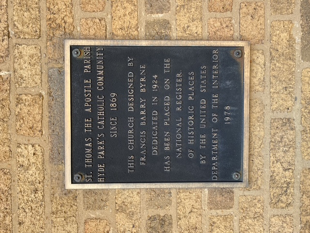
National Landmark: STA is often referred to as the first “modern” church in America because architect Barry Bryne’s innovative skyscraper-style steel construction allowed for a clear span across the sanctuary.
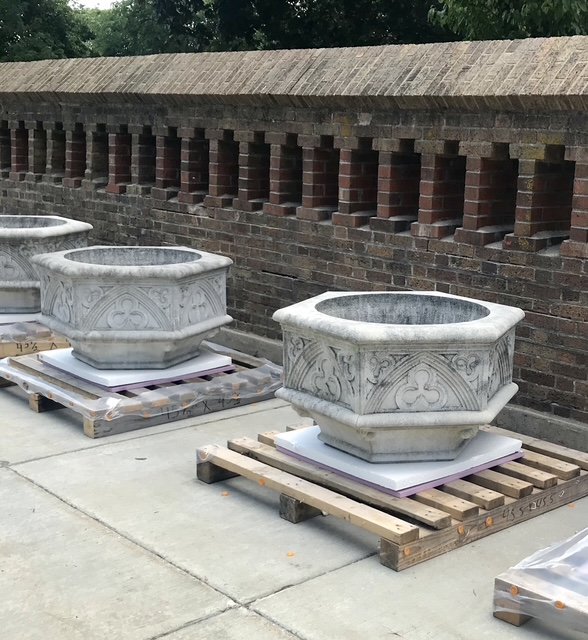
Monumental Gothic Planters awaiting installation
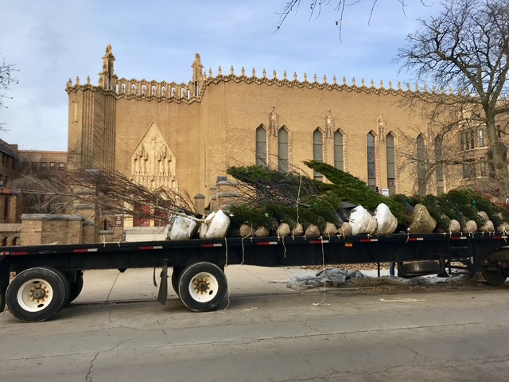
One of the many truckloads of specimen trees and shrubs needed to restore the 3 acres grounds!
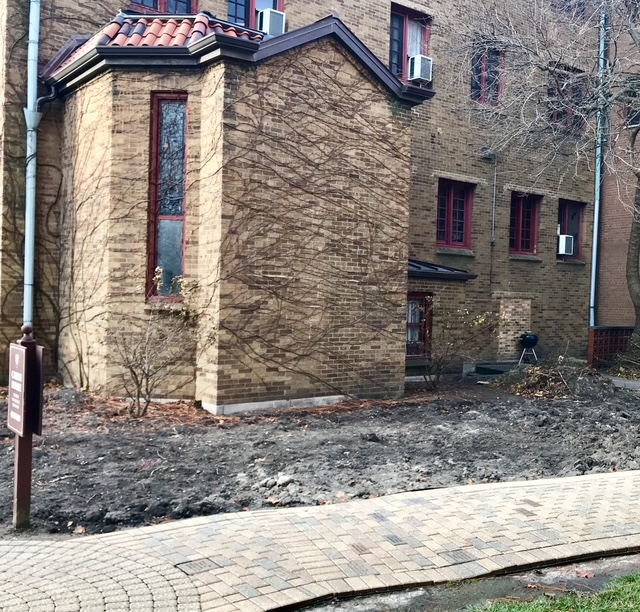
The “before” view of the new Contemplation Garden
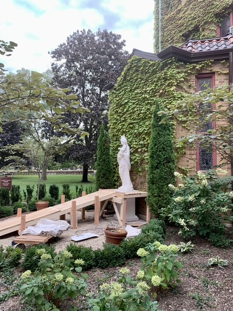
In an era when many churches are closing and their statues become homeless, a new statue was commissioned to honor the Virgin Mother centers the Contemplation Garden in the heart of the campus.
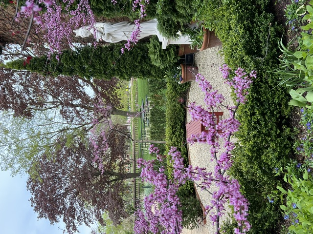
The new Contemplation Garden is planted with a grove of the rather rare red leaf-colored “Forest Pansy” variety of Cercis Canadensis to play off the red leaf maples long established in the park area of the grounds. And note the Virginia Blue Bells that Todd likes to colonize in his gardens.
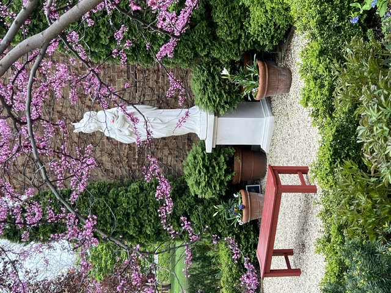
Another view of The Contemplation Garden showing the garden bench painted “Indian Red” to match the church’s doors.
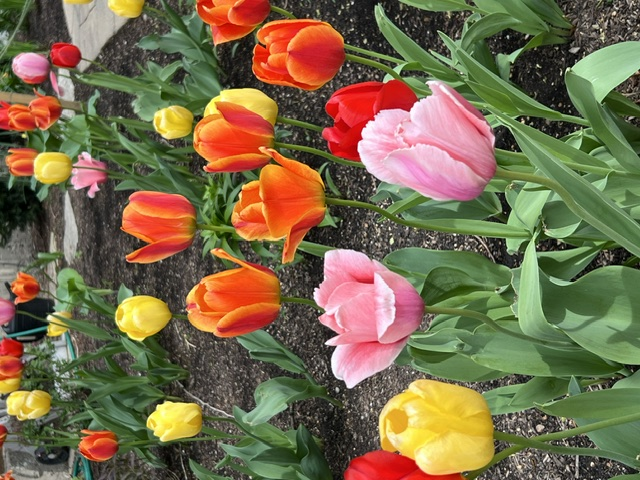
Tulip time is always a treat at any Schwebel Garden, and St. Thomas is no exception!
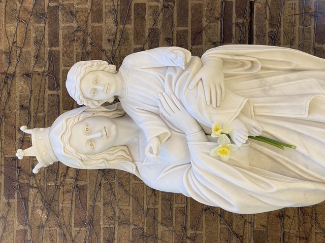
Todd reports, with delight, that visitors often leave a flower offering, a long standing tradition in the finest gardens across the world. We join them in their prayers for peace and beauty in our world.
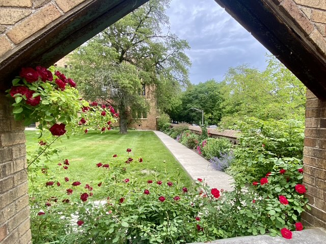
How many walled gardens are there in Chicago? Not many - nor is a trip required to England to visit this one open to the public and designed to look like a manor house’s garden.
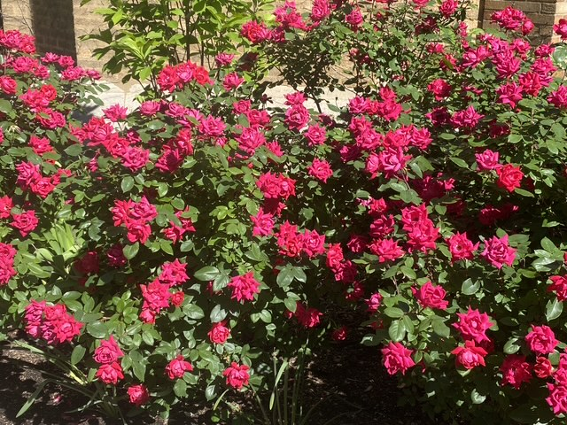
Simple “Knock Out” shrub roses put on a stupendous show!
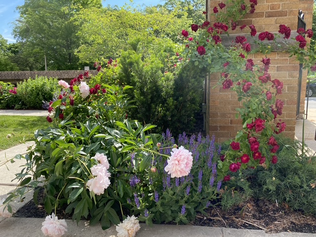
“Blaze” climbing rose with one of the many peonies acquired from the annual Hyde Park Garden Fair & Sale to plant throughout the gardens.
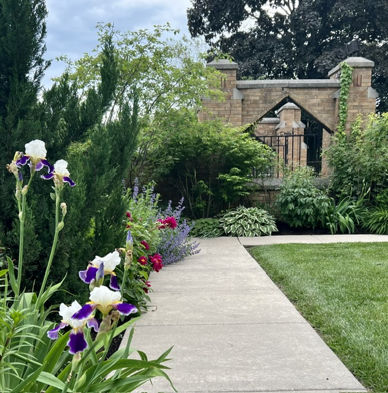
Todd is particularly fond of his heirloom “Logansport” Iris that find their way into many of his gardens across the country.
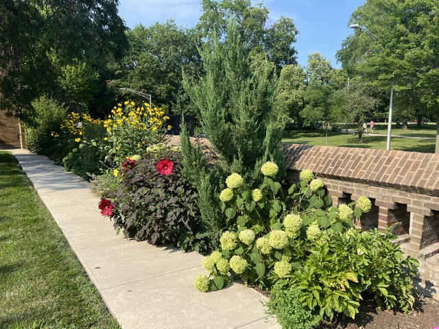
High Summer complete with perennial Hibiscus (note the red leaf, again to play to the red leaf color theme of the garden).
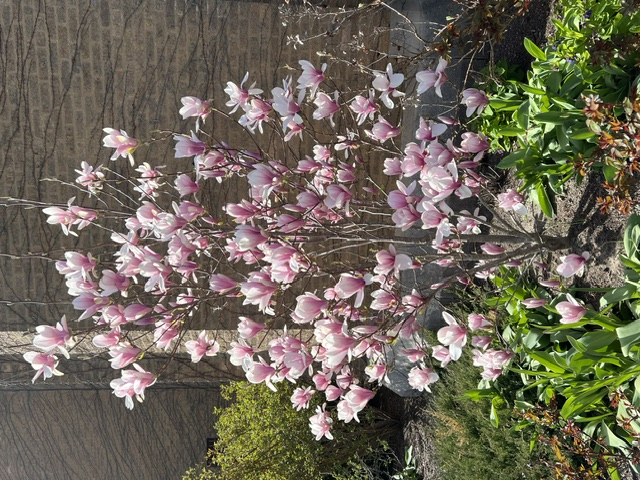
One of several new magnolia trees installed across the campus. This is one of the “Jane’s”. The blooms last longer!
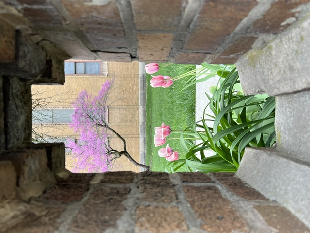
It’s the little things that count: a peak-a-boo Spring view through the wall from the public sidewalk never fails to disappoint at St. Thomas the Apostle.
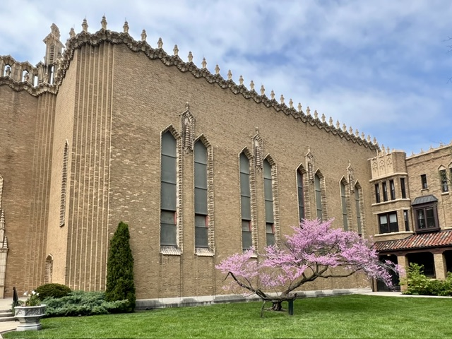
This ancient red bud was one of the legacy trees Todd selected to design the new landscape around. Todd edited extraneous material growing in competition near it, allowing the august tree to become a sculptural focal point worthy of its pride of place location on the church’s principal facade. This tree became the touchstone of Todd’s plan to restore the integrity of the grounds. To ensure its longevity a crutch was added to support one of its elderly limbs.
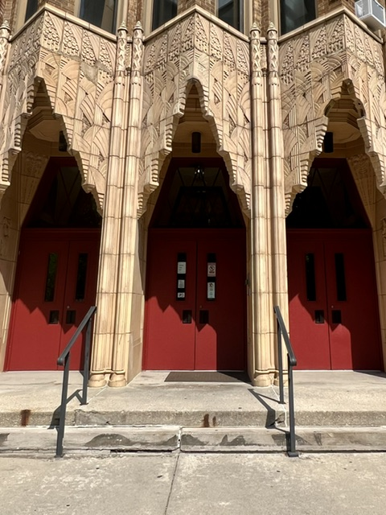
The Schwebel Company restored the entrance to St. Thomas the Apostle School deploying more “Indian Red” to show off Barry Bryne’s fabulous Modern Gothic ornamentation that, with no surprise, draws visitors from far and wide. The school yard also boasts a Schwebel Company garden!
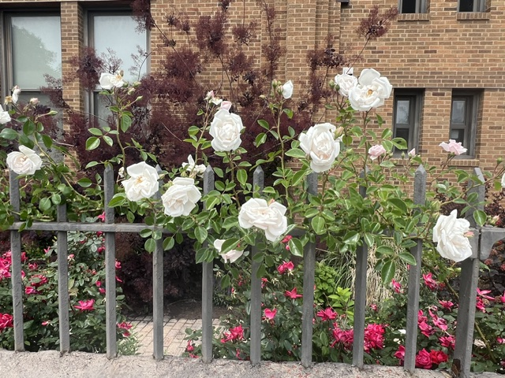
Every fence is an opportunity for beauty in Todd’s hands. This climbing rose graces the school’s parking lot, later in the season a rare pink climbing hydrangea graces this area of the grounds.
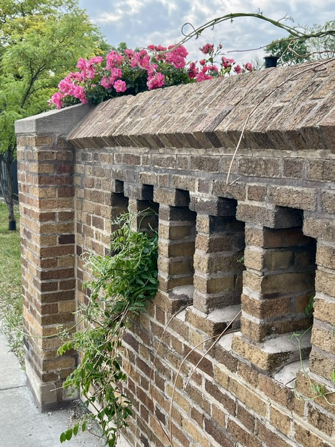
The long expanse of barren 55th Street adjacent to The University of Chicago campus is starting to come alive thanks to Todd’s garden activism: a prolific and indestructible “William Baffin” rose is ably taking on the concrete jungle in this inner city neighborhood! And a wisteria will someday provide a really big show, stay tuned!
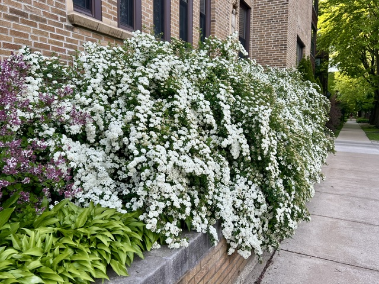
Consistent with Todd’s philosophy of impacting behavior through beauty, not grievance & protest, a magnificent old-fashioned bower of “Bridal Wreath” cascades out of its planter to cheer all passersby on the S. Kimbark Avenue sidewalk.
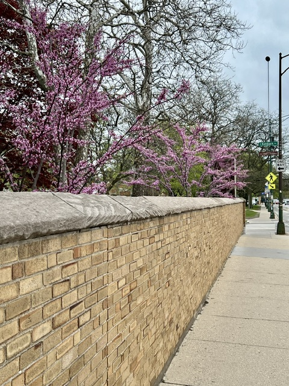
More civic engagement: this newly planted row of Red Bud trees is beginning to make its presence felt on the otherwise all-too-bereft Hyde Park streetscape. Someday a proud canopy of blooming branches will arc over the sidewalk to make pedestrians feel more welcome against the onslaught of concrete and traffic along 55th Street .
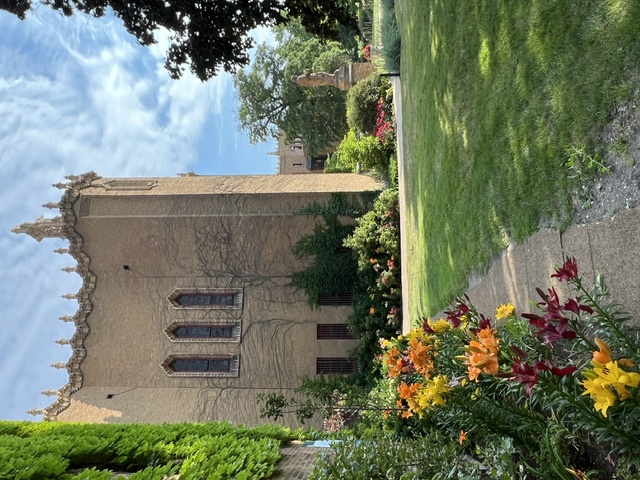
Stop and smell the roses, and also the lilies!
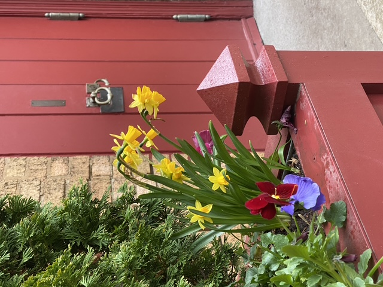
Expert restoration services (church doors & hardware) provided by The Schwebel Company unify the buildings with the landscape employing architecturally correct planters as transitions.
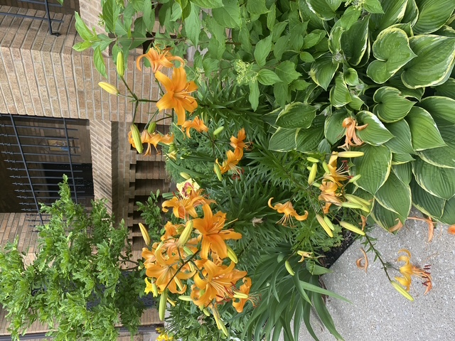
Lilies welome daily mass goers to a cloister wherein a small chapel offers respite from the life’s challenges.
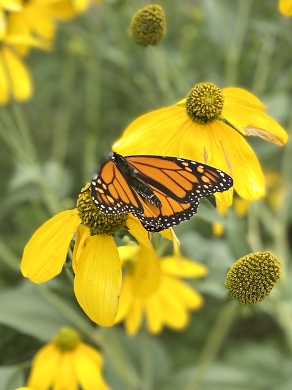
A very welcome garden visitor.
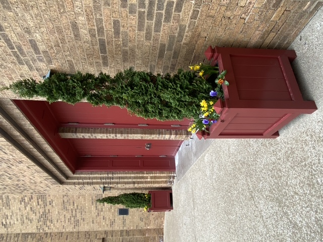
Todd designed custom planters in the Arts & Crafts style from Kimball & Bean to flank the west doors of the church.
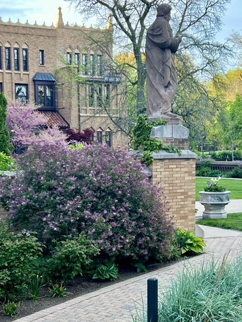
St. Thomas watching over his domain on a Spring morning
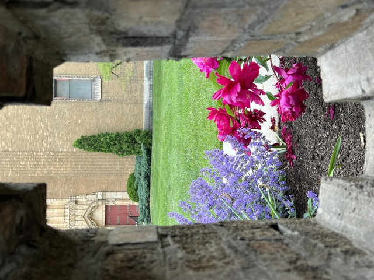
Another peek-a-boo garden view from the sidewalk
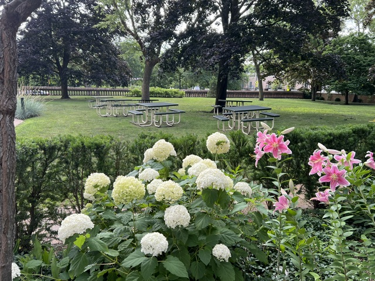
The school children use the picnic tables on nice days, including during Covid when they didn’t miss a day of school!
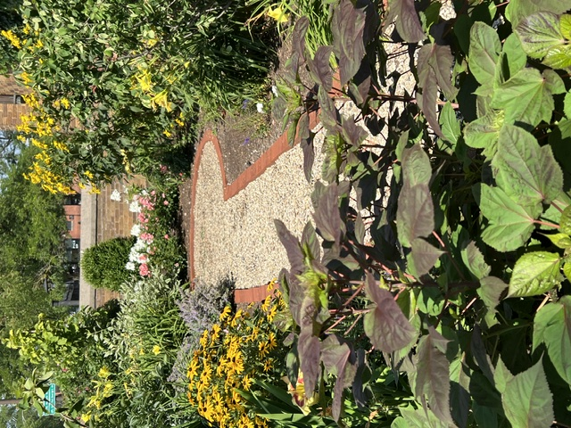
One of the many “Secret Gardens” at St. Thomas the Apostle where every corner within the walled grounds is gardened thanks to Todd Schwebel.Hibiscus joy!
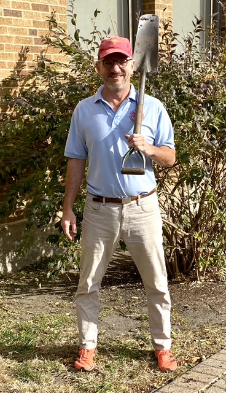
Civic Leader & Activist Todd Schwebel with his grandfather’s heirloom Swiss spade ready to work!